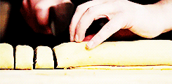
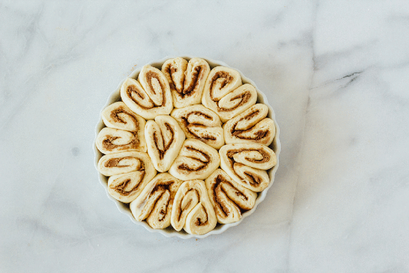

My Sticky Bun Recipe!
It takes about a 1/2 hour to prepare and another 1/2 hour to bake and cool, but BOY is it
ever worth the TIME!
Dough Ingredients:
- 2-1/2 cups all purpose flour (I prefer a 50/50 mix of whole wheat flour and white flour.)
- 2 teaspoons baking powder
- 1/4 cup sugar
- 1/2 teaspoon salt
- 6 tablespoons butter (snipped)
- 3/4 cup milk (it tastes best with whole milk, but any will do)
Filling Ingredients:
- 3 tablespoons melted butter (Please, please, please don't use margerine unless you're allergic to butter!)
- 1/2 cup packed brown sugar
- 1/2 cup chopped walnuts or pecans
- 2 tsp cinnamon
- pinch of cardomom
Topping Ingredients:
- 1/2 cup packed brown sugar
- 1/2 cup melted butter
- 1/4 cup chopped walnuts or pecans
Instructions:
- Preheat oven to 375°F.
- Blend Dough ingredients together starting with dry ingredients, stir in butter and milk until just mixed.
- Flour surface and knead the dough until pliable, but not sticky.
- Roll out onto floured surface with rolling pin.
- Mix all Filling ingredients together and spread onto rolled out dough.
- Starting at long end of dough, roll up, and slice the "log" roll into 12 rolls.
- Mix all Topping ingredients together. Set aside.
- Spread topping on the bottom of a 9" x 9" baking pan.
- Place rolls, cut side down, into the pan on top of the topping.
- Bake for 20-25 minutes. Buns will be golden on sides
and top.
- Flip buns out of pan (UPSIDEDOWN) onto a piece of parchment paper. Cool and EAT UP!